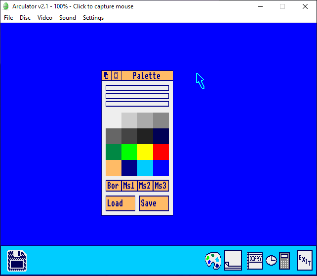
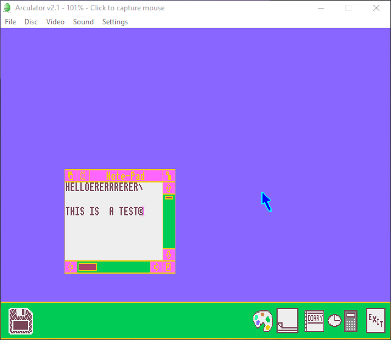
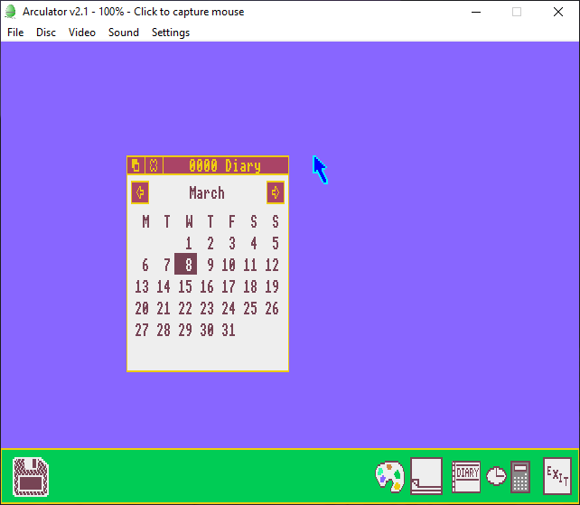
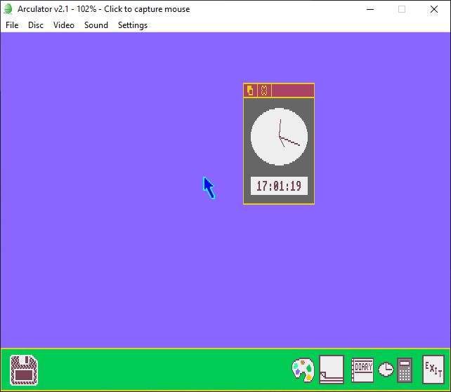
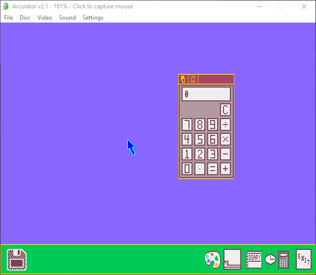
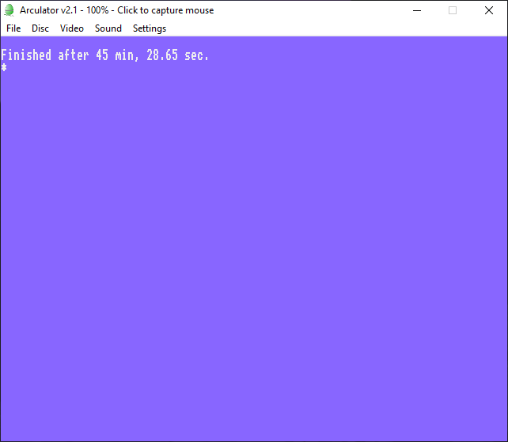

A little while ago in 2021, I was talking to a friend about RISC OS
when I came across "Arthur" because I was doing research
simultaneously. I thought it was just another OS but it turns out
Arthur was before RISC OS but RISC OS is the simple rename for
version 2. The numbering scheme for it is a bit weird but the first
public release of the OS was Arthur 1.20 in June 1987 but there are
also 0.30 and 0.20. The OS was developed using a prototype ARM-based
system connected to a BBC computer, before moving on to the
prototype Acorn Archimedes the A500. Arthur was not a multitasking
operating system either.
I remembered about it years later and tried to see if there were any
pages about Arthur but all I really find are videos and no reviews.
Most reviews are for RISC OS only so I thought let’s do one for
Arthur then, so let's look at it again. If you wish to try Arthur
out yourself without downloading an emulator you can try it in a web
browser
here.
Screenshots and Videos
My emulator of choice for getting Arthur OS to run is Arculator as
it already has Arthur for you when you make a machine. Arthur seems
to boot up pretty fast regardless of what I make the settings for
the emulated computer. This is emulating the Archimedes 305 and this
is using Arthur 0.30.
As you can see when it is done booting you get a desktop with a dark
blue background and a “taskbar” that is light blue with white icons
on the bottom. As for the icons on the left is a floppy disk icon,
and on the right are 5 other icons for a palette, notepad, a diary,
a clock, a calculator, and the exit icon. You may notice the icons
are different sizes too.
Since there’s no floppy disk in the drive clicking on the floppy
icon does nothing and only gives an error saying the system reported
an error because the drive is empty. It seems once you get the error
you can’t move the cursor which is dark blue with a light blue
outline out of the borders for the message box, which is odd.

Open windows have a beige coloured bar at the top and for buttons
was well. There’s a palette thing in Arthur which allows you to load
and save palettes.
You can also change the colours of the palette so if I change the
dark blue to purple, it changes the background. The same goes for
the light blue for the taskbar so now I can have a light green
taskbar with a lilac background, a dark pink colour for the button
colours, yellow for the text colours and a different coloured floppy
icon. This reminds me of Windows 1.0
Changing the palette also changes the colours on the icon for the
palette as the icon is designed to look like a palette board!

The notepad is interesting. You can type in it but you can’t use
backspace to remove words or to remove a space as you can tell in
the screenshot. Not sure if this is an emulator thing or an actual
thing with Arthur. Some of it turned pink as it is an active window
with a different palette.
You can make it full screen by clicking on the icon at the top right
of the window. Exiting the notepad seems to keep your changes for
when you open the notepad again if you haven’t turned the machine
off.

Arthur has a built-in diary that has the wrong year as it is 2023
and not 0000. Arthur existed when the universe began /s.
Clicking on a date opens another window that takes note of the day
you click on along with the month and year but that seems to be
about it. it only lets you pick one.

There’s also a clock which shows analogue and digital time under as
24 hour time in which I cannot read well. The analogue clock only
has the hour, minute and second hands on it.

The calculator is a simple calculator which works.
As you can tell I suck at using calculators on a PC where you have
to manually do it. Physical ones are better sometimes.
I put in a LILO boot disk to see how Arthur would react and it seems
it reports “error 10” at :0/00000000 which to me indicates it at
least detected *something* in the drive but can’t open it.
Attempting to make a blank disk and trying to load it doesn’t do
much either as you get the same error.

Exiting the machine results in this screen for which shows how long
your session went on.
Arthur 1.20 isn’t much different besides changing the taskbar colour
to a beige colour and the icons are better sized to be equal.
Arculator has the option to run Arthur 1.20 on a A500 prototype but
you won’t get much besides be redirected to ARM BBC BASIC V.